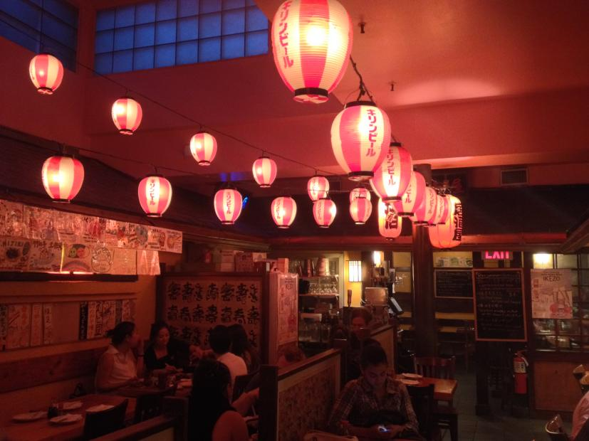
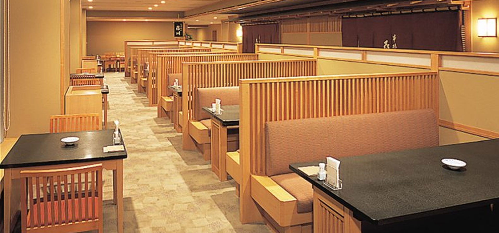

Welcome to Nero Restaurant
Nero is one of the best known japanese restaurants in Myanmar. The brand has five branches in total, each branch contains its own uniqueness atmosphere, which targets its own customers.
Nero is a must-try Japanese restaurant that is recognised by Myanmar Restaurant Guide and guaranteed by all Local customers throughout the city and numerous international travellers for its great tastes and extra ordinary dining experience.
 |
 |  |
Japanese Taste For Everyone
Food taste like local japan food in this restaurant. All the food in menus tatse good as our chef's creative cooking. You can try any dishes as there is not only main dishes and you can eat as a snack, side dishes. The complexity results in dishes that truly nourish the soul.
"A recipe has no soul. We, as the cook, must bring soul to the recipe" and You don't need the silver or gold fork and spoon to eat good food.